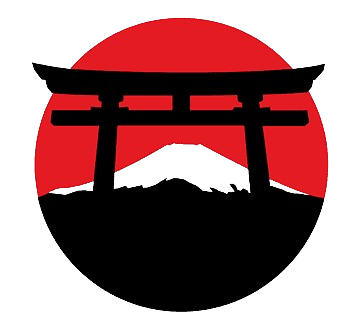
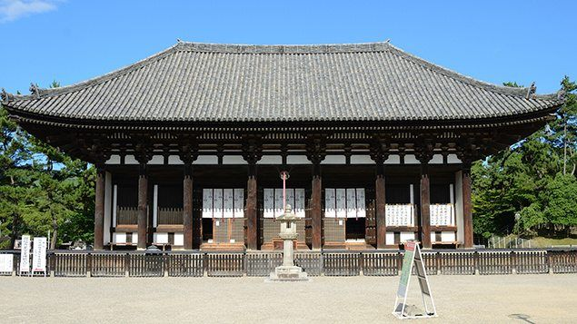
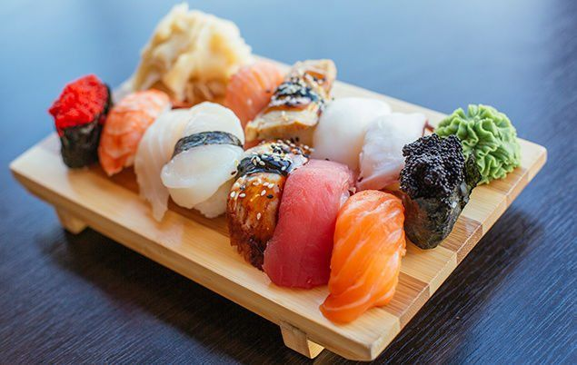
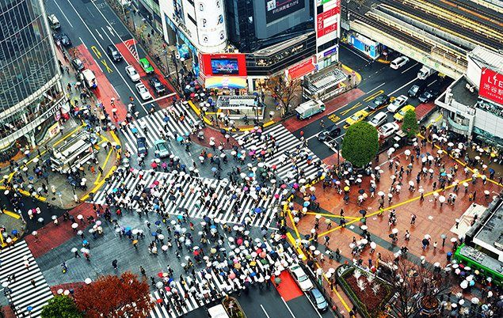

ABOUT Japan
Japan is an archipelago, or string of islands, on the eastern edge of Asia. There are four main islands – Hokkaido, Honshu, Shikoku and Kyushu.There are also nearly 4,000 smaller islands, too! Japan’s nearest mainland neighbours are the Siberian region of Russia in the north, and Korea and China farther south.
Almost four-fifths of Japan is covered with mountains. The Japanese Alps run down the centre of the largest island, Honshu. The highest peak and Japan’s most famous mountain is Mount Fuji, a cone-shaped volcano considered sacred by many Japanese.
The Japanese people have a deep affection for the beauty of the landscape. The ancient Shinto religion says natural features like mountains, waterfalls and forests have their own spirit or soul.
Japan’s wildlife and nature
Japan is home to some wonderful wildlife! Some of the country’s most incredible creatures include the sika deer, red-crowned crane, stellar’s sea eagle and one of the coolest critters on the planet…the Japanese macaque monkey!

Most of Japan is covered by countryside – but with more than 100 million people living in such a small place, sadly, wildlife has suffered. Although pollution is now tightly controlled, over the years, road building and other human activities have harmed natural habitats. Today, about 136 species in Japan are listed as endangered.
Off the coast of this incredible country, the warm Tsushima Current flows from the south into the Sea of Japan, where it meets a colder current from the north. As a result of the mixing of different waters, the seas around Japan are very rich in fish and other sea life. Cool!
The history of Japan
People first came to Japan about 30,000 years ago. At the time, the main islands were connected to Siberia and Korea by bridges of dry land, allowing people to cross on foot. The first society, called the Jomon culture, arose about 12,000 years ago. Around the same time, the Ainu people arrived by boat from Siberia. The Jomon and Ainu survived for thousands of years, hunting, fishing and gathering plants.
In 300 B.C., the Yayoi people came to Honshu Island from Korea and China. The Yayoi were skilled weavers, tool makers and farmers, and they were the first people in Japan to cultivate rice in flooded paddy fields.
In 660 B.C., Japan’s first emperor, Jimmu Tenno, came to power. For many years following, Japan was governed by a string of emperors, until the 12th century A.D. when military rulers, called shoguns, took control by force.

Europeans first arrived in Japan in 1543, bringing with them a range of new technologies and cultural practices, including the Christian religion. But in 1635, the ruling shogun closed Japan to foreigners and forbade Japanese to travel abroad, beginning a state of isolation that would last more than 200 years. In 1868, the shoguns were overthrown and emperors returned. This was a time of great change and modernisation for Japan.
During World War I (1914-1917), Japan fought on the side of the Allies (Britain, France, Belgium, Russia and the USA). But in World War II, Japan’s military leaders sided with the Axis powers, joining forces with Germany and Italy.
Japanese people and culture
The Japanese are famous for their willingness to work very hard. Children are taught to show respect for others, especially parents and bosses. They learn to do what’s best for their family or company and worry less about their own needs.
Japanese cuisine consists of lots of rice, fish and vegetables. With little fat and lots of vitamins and minerals, their food is very healthy. It’s believed their nutritious diet is what makes the Japanese, on average, one of the longest living populations in the world!

Japan’s government and economy
Japan is the only country in the world with a reigning emperor. Emperors have no real power, but they are still respected as a symbol of the country’s traditions and unity.
World War II devastated Japan’s economy, but the Japanese people’s hard work and clever innovation turned things around. Today, Japan has the third largest economy in the world. The country’s high-tech industry makes some of the most popular electronic products and vehicles in the world.

Beauty Is everywhere